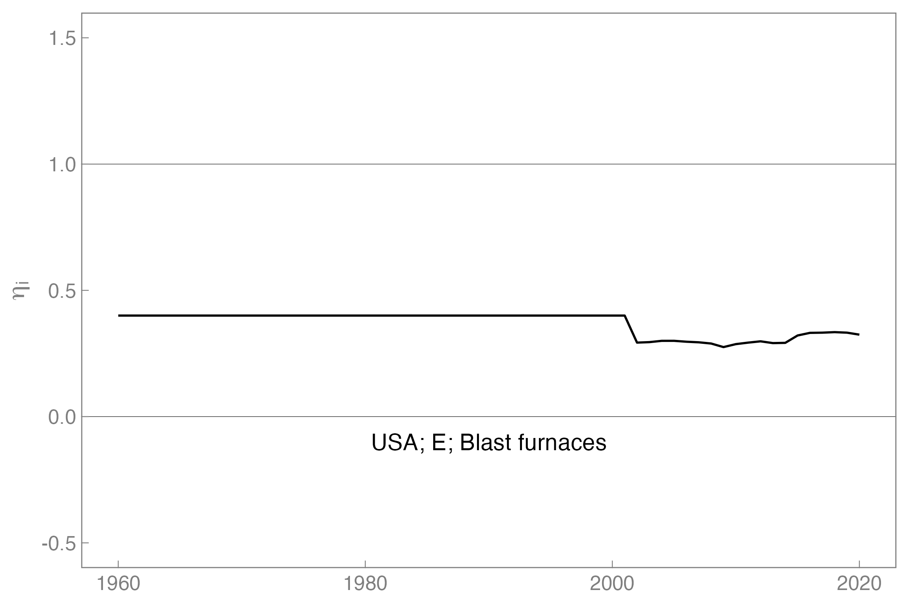
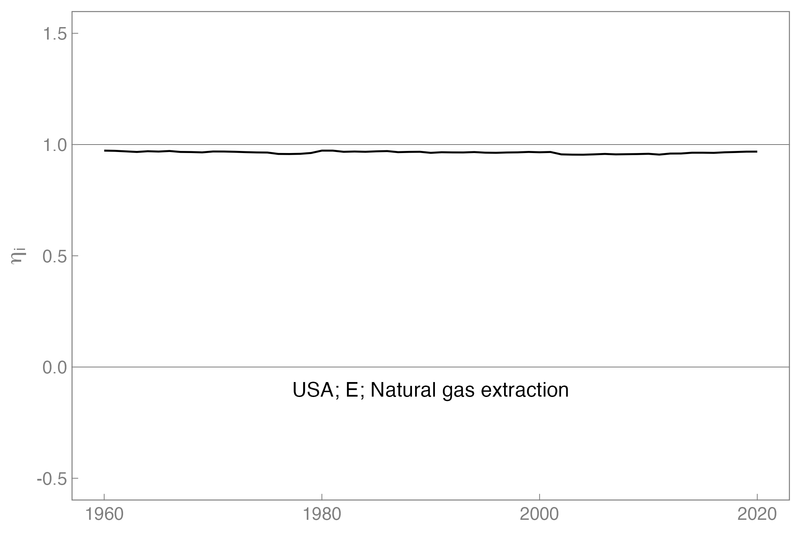

machine_efficiency_example.RmdThis vignette provides an introduction to using the machine efficiency data from the CL-PFU database and the CLPFUDecomposition calculation pipeline.
The first step is to establish a “pinboard” for the pins package. Someone from the
MR-PFU Database team will have shared the “PipelineReleases” folder if
you have access to IEA data. The PFUSetup package is
helpful to find the correct folder. Install the PFUSetup
package with the following code.
devtools::install_github("EnergyEconomyDecoupling/PFUSetup")Create the pinboard from the correct Dropbox folder. Your
pinboard_folder might be different from this example, due
to a different location on your computer.
pinboard_folder <- PFUSetup::get_abs_paths()[["pipeline_releases_folder"]]
pinboard_folder
#> [1] "/Users/mkh2/Dropbox/Fellowship 1960-2015 PFU database/OutputData/PipelineReleases"
pinboard <- pins::board_folder(pinboard_folder, versioned = TRUE)
pinboard
#> Pin board <pins_board_folder>
#> Path: '/Users/mkh2/Dropbox/Fellowship 1960-2015 PFU
#> database/OutputData/PipelineReleases'
#> Cache size: 0Machine efficiency data is stored in the “eta_i” pin, so named after
the function in the Recca package that performs the
calculations [Recca::calc_eta_i()]. The version below contains
efficiencies for the USA for the years 1960–2000.
eta_i_data <- pins::pin_read(board = pinboard,
name = "eta_i",
version = "20230904T183344Z-d3924") |>
PFUPipelineTools::tar_ungroup()
names(eta_i_data)
#> [1] "Country" "Method" "Energy.type" "Last.stage" "Year"
#> [6] "IEAMW" "R" "U" "U_feed" "U_EIOU"
#> [11] "r_EIOU" "V" "Y" "S_units" "eta_i"The eta_i column contains machine efficiencies as column
vectors in each row. To unpack the efficiencies out of the vectors, use
the matsindf package.
unpacked_eta_i_data <- eta_i_data |>
dplyr::filter(IEAMW == "IEA", Last.stage == "Final") |>
# Delete columns containing original PSUT matrices (if present)
dplyr::mutate(
R = NULL, U = NULL, U_feed = NULL, U_EIOU = NULL, r_EIOU = NULL,
V = NULL, Y = NULL, S_units = NULL
) |>
# Put the data in the correct format for expanding the vectors
tidyr::pivot_longer(cols = "eta_i", names_to = "matnames", values_to = "matvals") |>
# Expand the vectors
matsindf::expand_to_tidy() |>
# Clean up
dplyr::rename(
machine = rownames,
eta_i = matvals
) |>
dplyr::mutate(matnames = NULL, colnames = NULL)
#> Loading required package: Matrix
unpacked_eta_i_data
#> # A tibble: 2,482 × 8
#> Country Method Energy.type Last.stage Year IEAMW machine eta_i
#> <chr> <chr> <chr> <chr> <dbl> <chr> <chr> <dbl>
#> 1 USA PCM E Final 1960 IEA Blast furnaces 0.400
#> 2 USA PCM E Final 1960 IEA Coal mines 1
#> 3 USA PCM E Final 1960 IEA Coke ovens 0.798
#> 4 USA PCM E Final 1960 IEA Gas works 0.929
#> 5 USA PCM E Final 1960 IEA Main activity produc… 0.377
#> 6 USA PCM E Final 1960 IEA Manufacture [of Geot… 1
#> 7 USA PCM E Final 1960 IEA Manufacture [of Hydr… 1
#> 8 USA PCM E Final 1960 IEA Manufacture [of Non-… 1
#> 9 USA PCM E Final 1960 IEA Manufacture [of Nucl… 1
#> 10 USA PCM E Final 1960 IEA Natural gas extracti… 0.973
#> # ℹ 2,472 more rowsTo create a graph for each machine, we can nest the data to create an
eta_i column that contains a tibble with year
and efficiency columns.
nested_eta_i_data <- unpacked_eta_i_data |>
tidyr::nest(.by = tidyr::all_of(c("Country", "Method", "Energy.type", "Last.stage", "IEAMW", "machine")), .key = "year_eta_i")
nested_eta_i_data
#> # A tibble: 62 × 7
#> Country Method Energy.type Last.stage IEAMW machine year_eta_i
#> <chr> <chr> <chr> <chr> <chr> <chr> <list>
#> 1 USA PCM E Final IEA Blast furnaces <tibble>
#> 2 USA PCM E Final IEA Coal mines <tibble>
#> 3 USA PCM E Final IEA Coke ovens <tibble>
#> 4 USA PCM E Final IEA Gas works <tibble>
#> 5 USA PCM E Final IEA Main activity produce… <tibble>
#> 6 USA PCM E Final IEA Manufacture [of Geoth… <tibble>
#> 7 USA PCM E Final IEA Manufacture [of Hydro] <tibble>
#> 8 USA PCM E Final IEA Manufacture [of Non-s… <tibble>
#> 9 USA PCM E Final IEA Manufacture [of Nucle… <tibble>
#> 10 USA PCM E Final IEA Natural gas extraction <tibble>
#> # ℹ 52 more rowsFinally, we can create a column of graphs.
create_plot <- function(tibble_data, country_name, energy_type, machine_name) {
ggplot2::ggplot() +
ggplot2::geom_hline(yintercept = 0, linewidth = 0.1) +
ggplot2::geom_hline(yintercept = 1, linewidth = 0.1) +
ggplot2::geom_text(ggplot2::aes(x = 1990, y = -0.1,
label = paste(country_name,
energy_type,
machine_name, sep = "; "))) +
ggplot2::geom_line(data = tibble_data,
mapping = ggplot2::aes(x = Year, y = eta_i)) +
ggplot2::labs(x = NULL, y = expression(eta[i])) +
ggplot2::ylim(c(-0.5, 1.5)) +
MKHthemes::xy_theme()
}
eta_i_graphs <- nested_eta_i_data |>
dplyr::mutate(
# plots = purrr::map(.x = year_eta_i, .f = create_plot)
plots = purrr::pmap(.l = list(tibble_data = year_eta_i,
country_name = Country,
energy_type = Energy.type,
machine_name = machine), .f = create_plot)
)We can look at each graph.
eta_i_graphs$plots[[1]]
eta_i_graphs$plots[[10]]